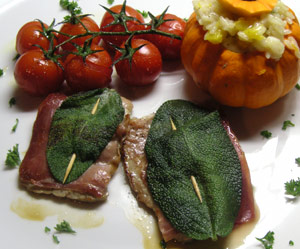

Kürbisrisotto
zwiebeln, vialone reis und fein gehackte Kürbisstücke in olivenoel andünsten. mit weisswein und gemüsebouillon (wenn möglich selbst gemacht) ablöschen. ca. 25 min auf kleiner stufe köcheln lasen, regelmässig heisses wasser oder Bouillon nachgiessen. ein gutsch rahm und parmesan dauzu geben und würzen. noch etwas butter rein, wenige minuten ziehen lassen. In kleinen ausgehöhlten Kürbise servieren.
